Part A-1 (only one out of four options is correct).
Two balls are projected from the top of a cliff with equal initial speed . One starts at angle above the horizontal while the other starts at angle below. Difference in their ranges on ground is
- (a)
- (b)
- (c)
- (d)
Topic: Newtonian Mechanics Metodi: Kinematic Equations, Vector Decomposition Competenze: Physical Reasoning Objects: Ball, Projectile Fonte: Testo (PDF) — p.3 Soluzione: Soluzioni (PDF)
Parte A-1 (solo una delle quattro opzioni è corretta).
Due palle vengono proiettate dalla cima di una scogliera con la stessa velocità iniziale . Uno inizia all’angolo sopra l’orizzontale mentre l’altro inizia all’angolo sotto. La differenza tra le loro distanze sul terreno è
- (a)
- (b)
- (c)
- (d)
Topic: Newtonian Mechanics Metodi: Kinematic Equations, Vector Decomposition Competenze: Physical Reasoning Objects: Ball, Projectile Fonte: Testo (PDF) — p.3 Soluzione: Soluzioni (PDF)
A solid block of mass 3 kg is suspended from the bottom of a 5 kg block with the help of a rope AB of mass 2 kg as shown in the figure. When pulled by an upward force F, the whole system experiences an upward acceleration . Choose the correct option.
Quesito 2
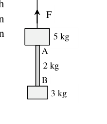
- (a) Net force on the rope AB is 24 N
- (b) Tension at the midpoint of the rope AB is 48 N
- (c) Force F is 20 N
- (d) Force F is 60 N
Topic: Newtonian Mechanics Metodi: Free-Body Diagram Competenze: Physical Reasoning Objects: Block, String Fonte: Testo (PDF) — p.3 Soluzione: Soluzioni (PDF)
Un blocco solido di massa 3 kg è sospeso dal fondo di un blocco di 5 kg con l’aiuto di una corda AB di massa 2 kg come mostrato nella figura. Quando viene tirato da una forza ascendente F, l’intero sistema subisce un’accelerazione ascendente . Scegli l’opzione giusta.
Quesito 2
- a) La forza netta della corda AB è di 24 N
- b) La tensione al centro della corda AB è di 48 N
- (c) Forza F è 20 N
- (d) Forza F è 60 N
Topic: Newtonian Mechanics Metodi: Free-Body Diagram Competenze: Physical Reasoning Objects: Block, String Fonte: Testo (PDF) — p.3 Soluzione: Soluzioni (PDF)
A block P of mass 0.4 kg is attached to a vertical rotating spindle by two strings AP and BP of equal length 1.0 m as shown in the figure. The period of rotation is 1.2 s. Tensions and along string AP and BP are
Quesito 3
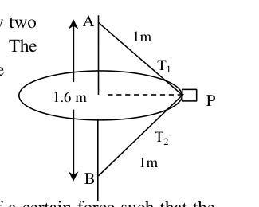
- (a) N N
- (b) N N
- (c) N N
- (d) N
Topic: Newtonian Mechanics, Rotational Dynamics Metodi: Free-Body Diagram, Vector Decomposition Competenze: Physical Reasoning Objects: Block, String Fonte: Testo (PDF) — p.3 Soluzione: Soluzioni (PDF)
Un blocco P di massa di 0,4 kg è attaccato a un spindle rotante verticale con due corde AP e BP di una lunghezza uguale di 1,0 m, come mostrato nella figura. Il periodo di rotazione è di 1,2 s. Le tensioni e lungo la stringa AP e BP sono
Quesito 3
- (a) N N
- (b) N N
- (c) N N
- (d) N
Topic: Newtonian Mechanics, Rotational Dynamics Metodi: Free-Body Diagram, Vector Decomposition Competenze: Physical Reasoning Objects: Block, String Fonte: Testo (PDF) — p.3 Soluzione: Soluzioni (PDF)
A particle of mass moves in a straight line under the influence of a certain force such that the power (P) delivered to it remains constant. Starting from rest, the straight line distance traveled by the moving particle in time is
- (a)
- (b)
- (c)
- (d)
Topic: Newtonian Mechanics, Conservation of Energy Metodi: Differential Equations, Calculus-Integration Competenze: Mathematical Modeling Objects: — Fonte: Testo (PDF) — p.3 Soluzione: Soluzioni (PDF)
Una particella di massa si muove in linea retta sotto l’influenza di una certa forza in modo tale che la potenza (P) che le viene fornita rimanga costante. A partire dal riposo, la distanza in linea retta percorsa dalla particella in movimento nel tempo è
- (a)
- (b)
- (c)
- (d)
Topic: Newtonian Mechanics, Conservation of Energy Metodi: Differential Equations, Calculus-Integration Competenze: Mathematical Modeling Objects: — Fonte: Testo (PDF) — p.3 Soluzione: Soluzioni (PDF)
A bullet is fired vertically up with half the escape speed from the surface of the Earth. The maximum altitude reached by it (ignore the effect of rotation of the Earth) in terms of radius of Earth is
- (a)
- (b)
- (c)
- (d)
Topic: Gravitation Metodi: Conservation of Energy, Newton’s Law of Gravitation Competenze: Physical Reasoning Objects: Projectile, Planet Fonte: Testo (PDF) — p.3 Soluzione: Soluzioni (PDF)
Un proiettile viene sparato verticalmente con metà della velocità di fuga dalla superficie terrestre. L’altitudine massima raggiunta da esso (ignorare l’effetto della rotazione della Terra) in termini di raggio della Terra è
- (a)
- (b)
- (c)
- (d)
Topic: Gravitation Metodi: Conservation of Energy, Newton’s Law of Gravitation Competenze: Physical Reasoning Objects: Projectile, Planet Fonte: Testo (PDF) — p.3 Soluzione: Soluzioni (PDF)
A can is a hollow cylinder of radius and height . Its ends are sealed with circular sheets of the same material. The can is made of thin sheet metal of areal mass density . Moment of inertia of this closed can about its vertical axis of symmetry is
Quesito 6
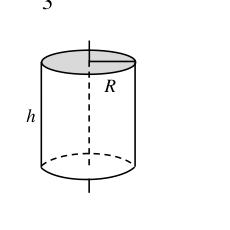
- (a)
- (b)
- (c)
- (d)
Topic: Rotational Dynamics Metodi: Calculus-Integration, Physical Modeling Competenze: Mathematical Modeling Objects: Cylinder Fonte: Testo (PDF) — p.3 Soluzione: Soluzioni (PDF)
Un can è un cilindro vuoto di raggio e altezza . Le sue estremità sono sigillate con fogli circolari dello stesso materiale. La lattina è realizzata in lamiera sottile di massa . Il momento di inerzia di questo chiuso ** può** circa il suo asse verticale di simmetria è
Quesito 6
- (a)
- (b)
- (c)
- (d)
Topic: Rotational Dynamics Metodi: Calculus-Integration, Physical Modeling Competenze: Mathematical Modeling Objects: Cylinder Fonte: Testo (PDF) — p.3 Soluzione: Soluzioni (PDF)
A particle of mass is revolving in a horizontal circle on a frictionless horizontal table with the help of a string tied to it and passing through a hole at the center of the table. Two equal masses M are attached to the other end of the string as shown. If one of the hanging masses M is removed gently, the radius of the circular motion of
Quesito 7
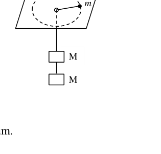
- (a) decreases by a factor 1.414
- (b) increases by a factor 1.260
- (c) increases by a factor 1.414
- (d) does not change because of the conservation of angular momentum.
Topic: Rotational Dynamics Metodi: Torque & Angular Momentum Analysis, Conservation Laws Competenze: Physical Reasoning Objects: String, Block Fonte: Testo (PDF) — p.4 Soluzione: Soluzioni (PDF)
Una particella di massa ruota in un cerchio orizzontale su una tavola orizzontale senza attrito con l’aiuto di una corda legata a essa e attraversa un buco al centro della tavola. Due masse uguali M sono attaccate all’altra estremità della stringa come mostrato. Se una delle masse appese M viene rimossa delicatamente, il raggio del movimento circolare di
Quesito 7
- a) diminuzioni di un fattore 1.414
- b) incrementi di un fattore 1.260
- c) incrementi di un fattore 1.414
- non cambia a causa della conservazione del momento angolare.
Topic: Rotational Dynamics Metodi: Torque & Angular Momentum Analysis, Conservation Laws Competenze: Physical Reasoning Objects: String, Block Fonte: Testo (PDF) — p.4 Soluzione: Soluzioni (PDF)
Three stars of equal mass M rotate in a circular path of radius about their center of mass such that the stars always remain equidistant from each other. The common angular speed of rotation of the stars can be expressed as
- (a)
- (b)
- (c)
- (d)
Topic: Gravitation Metodi: Newton’s Law of Gravitation, Free-Body Diagram Competenze: Mathematical Modeling Objects: Star Fonte: Testo (PDF) — p.4 Soluzione: Soluzioni (PDF)
Tre stelle di massa uguale M ruotano in un percorso circolare di raggio intorno al loro centro di massa in modo tale che le stelle rimangano sempre a pari distanza l’una dall’altra. La velocità angolare comune di rotazione delle stelle può essere espressa come
- (a)
- (b)
- (c)
- (d)
Topic: Gravitation Metodi: Newton’s Law of Gravitation, Free-Body Diagram Competenze: Mathematical Modeling Objects: Star Fonte: Testo (PDF) — p.4 Soluzione: Soluzioni (PDF)
The density of a liquid is at the surface. The bulk modulus of the liquid is B. The increase in the density of the liquid at a depth from the surface is (with )
- (a)
- (b)
- (c)
- (d)
Topic: Fluid Mechanics, Elasticity & Materials Metodi: Hydrostatic Equilibrium, Approximation & Series Expansion Competenze: Mathematical Modeling Objects: — Fonte: Testo (PDF) — p.4 Soluzione: Soluzioni (PDF)
La densità di un liquido è alla superficie. Il modulo di massa del liquido è B. L’aumento della densità del liquido a una profondità dalla superficie è (con )
- (a)
- (b)
- (c)
- (d)
Topic: Fluid Mechanics, Elasticity & Materials Metodi: Hydrostatic Equilibrium, Approximation & Series Expansion Competenze: Mathematical Modeling Objects: — Fonte: Testo (PDF) — p.4 Soluzione: Soluzioni (PDF)
Water flows at 1.2 m/s through a hose of diameter 1.59 cm. The time required to fill a cylindrical container of radius 2 m to a height of m will be nearly
- (a) 18.3 hour
- (b) 2.7 hour
- (c) 550 min
- (d) 220 min
Topic: Fluid Mechanics Metodi: Continuity Equation Competenze: Unit Conversion Objects: Tube, Container Fonte: Testo (PDF) — p.4 Soluzione: Soluzioni (PDF)
L’acqua scorre a 1,2 m/s attraverso un tubo di diametro di 1,59 cm. Il tempo necessario per riempire un contenitore cilindrico di raggio di 2 m ad un’altezza di m sarà di quasi
- a) 18,3 ore
- b) 2,7 ore
- c) 550 minuti
- d) 220 minuti
Topic: Fluid Mechanics Metodi: Continuity Equation Competenze: Unit Conversion Objects: Tube, Container Fonte: Testo (PDF) — p.4 Soluzione: Soluzioni (PDF)
A police car, moving at speed of 108 km/hour, approaches a truck moving at 72 km/hour in opposite direction. The natural frequency of the siren of the car is 800 Hz and the surrounding temperature is 27°C. The frequency heard by the truck driver as the car passes him
- (a) remains unchanged
- (b) decreases nearly by 232 Hz
- (c) increases nearly by 231 Hz
- (d) decreases nearly by 240 Hz
Topic: Oscillations & Waves Metodi: Physical Modeling Competenze: Physical Reasoning Objects: — Fonte: Testo (PDF) — p.4 Soluzione: Soluzioni (PDF)
Una macchina di polizia, in movimento a una velocità di 108 km/h, si avvicina a un camion in movimento a 72 km/h nella direzione opposta. La frequenza naturale della sirena dell’auto è di 800 Hz e la temperatura circostante è 27°C. La frequenza che il camionista sente mentre l’auto lo passa
- a) rimane invariato
- b) diminuisce di quasi 232 Hz
- c) aumenta di quasi 231 Hz
- (d) diminuisce di quasi 240 Hz
Topic: Oscillations & Waves Metodi: Physical Modeling Competenze: Physical Reasoning Objects: — Fonte: Testo (PDF) — p.4 Soluzione: Soluzioni (PDF)
A rope of mass M and length L hangs vertically. Time needed for a transverse pulse to travel from its bottom end to the upper end is
- (a)
- (b)
- (c)
- (d)
Topic: Oscillations & Waves Metodi: Wave Equation, Calculus-Integration Competenze: Mathematical Modeling Objects: String Fonte: Testo (PDF) — p.4 Soluzione: Soluzioni (PDF)
Una corda di massa M e lunghezza L è appesa in verticale. Il tempo necessario per un impulso trasversale per viaggiare dal suo fine inferiore al suo fine superiore è
- (a)
- (b)
- (c)
- (d)
Topic: Oscillations & Waves Metodi: Wave Equation, Calculus-Integration Competenze: Mathematical Modeling Objects: String Fonte: Testo (PDF) — p.4 Soluzione: Soluzioni (PDF)
The figure shows a smooth tunnel AB in a uniform density planet (say Earth) of mass M and radius R. A small ball of mass m is released from rest at the end A of the tunnel. Acceleration due to gravity at surface of the planet is g. Time taken by the ball to reach the end B is
Quesito 13
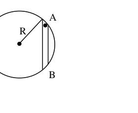
- (a)
- (b)
- (c)
- (d)
Topic: Gravitation, Oscillations & Waves Metodi: Simple Harmonic Motion Analysis, Newton’s Law of Gravitation Competenze: Mathematical Modeling Objects: Planet, Ball Fonte: Testo (PDF) — p.4 Soluzione: Soluzioni (PDF)
La figura mostra un tunnel liscio AB in un pianeta di densità uniforme (per esempio la Terra) di massa M e raggio R. Una piccola palla di massa m viene rilasciata dal riposo alla fine A del tunnel. L’accelerazione dovuta alla gravità sulla superficie del pianeta è g. Il tempo impiegato dalla palla per raggiungere la fine B è
Quesito 13
- (a)
- (b)
- (c)
- (d)
Topic: Gravitation, Oscillations & Waves Metodi: Simple Harmonic Motion Analysis, Newton’s Law of Gravitation Competenze: Mathematical Modeling Objects: Planet, Ball Fonte: Testo (PDF) — p.4 Soluzione: Soluzioni (PDF)
When the speaker is switched ON, the sound intensity at a point P in a room is 80 dB. But when the speaker is switched ON ( is switched OFF), the sound intensity at the same point P in the room is 85 dB. The sound intensity level (in dB) at the same point P in the room, if the two speakers and are simultaneously switched ON, is (consider the speakers to be incoherent)
- (a) 165 dB
- (b) 86.2 dB
- (c) 87.8 dB
- (d) 88.6 dB
Topic: Oscillations & Waves Metodi: Physical Modeling Competenze: Physical Reasoning Objects: — Fonte: Testo (PDF) — p.5 Soluzione: Soluzioni (PDF)
Quando il altoparlante è acceso, l’intensità sonora in un punto P in una stanza è di 80 dB. Ma quando il altoparlante è acceso ( è spento), l’intensità sonora nello stesso punto P nella stanza è di 85 dB. Il livello di intensità sonora (in dB) nello stesso punto P della stanza, se i due altoparlanti e sono attivati contemporaneamente, è (considerare gli altoparlanti incoerenti)
- (a) 165 dB
- (b) 86.2 dB
- (c) 87.8 dB
- (d) 88.6 dB
Topic: Oscillations & Waves Metodi: Physical Modeling Competenze: Physical Reasoning Objects: — Fonte: Testo (PDF) — p.5 Soluzione: Soluzioni (PDF)
A block B of mass 0.5 kg moving, on a horizontal frictionless table at 2.0 ms, collides with a massless pan P (at rest, joining O) and sticks to it. The pan is connected at the end of a horizontal un-stretched (relaxed) spring of force constant K = 32 Nm as shown in figure. After the block collides, the displacement of the block as a function of time is given by
Quesito 15
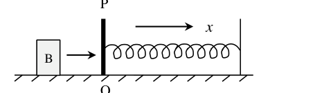
- (a)
- (b)
- (c)
- (d)
Topic: Oscillations & Waves, Conservation of Momentum Metodi: Simple Harmonic Motion Analysis, Conservation of Momentum Competenze: Mathematical Modeling Objects: Block, Spring Fonte: Testo (PDF) — p.5 Soluzione: Soluzioni (PDF)
Un blocco B di massa 0,5 kg in movimento, su una tavola orizzontale senza attrito a 2,0 ms, si schianta con una piastra senza massa P (a riposo, unendosi a O) e si attacca ad essa. Il pannello è collegato alla fine di una sorgente orizzontale non allungata (rilassata) di forza costante K = 32 Nm come mostrato nella figura. Dopo che il blocco si incontra, il spostamento del blocco in funzione del tempo viene dato da
Quesito 15
- (a)
- (b)
- (c)
- (d)
Topic: Oscillations & Waves, Conservation of Momentum Metodi: Simple Harmonic Motion Analysis, Conservation of Momentum Competenze: Mathematical Modeling Objects: Block, Spring Fonte: Testo (PDF) — p.5 Soluzione: Soluzioni (PDF)
Which of the following functions does not represent a traveling wave
- (a)
- (b)
- (c)
- (d)
Topic: Oscillations & Waves Metodi: Wave Equation Competenze: Physical Reasoning Objects: — Fonte: Testo (PDF) — p.5 Soluzione: Soluzioni (PDF)
Qual è tra le seguenti funzioni che non rappresenta un’onda in movimento
- (a)
- (b)
- (c)
- (d)
Topic: Oscillations & Waves Metodi: Wave Equation Competenze: Physical Reasoning Objects: — Fonte: Testo (PDF) — p.5 Soluzione: Soluzioni (PDF)
Two Carnot heat engines are connected in series such that the sink of the first engine is heat source of the second. Efficiency of the engines are and respectively. Net efficiency of the combination is given by
- (a)
- (b)
- (c)
- (d)
Topic: Thermodynamics Metodi: Thermodynamic Cycle Analysis Competenze: Mathematical Modeling Objects: Heat Engine Fonte: Testo (PDF) — p.5 Soluzione: Soluzioni (PDF)
Due motori termico Carnot sono collegati in serie in modo che il lavandino del primo motore sia fonte di calore del secondo. L’efficienza dei motori è rispettivamente e . L’efficienza netta della combinazione è data da
- (a)
- (b)
- (c)
- (d)
Topic: Thermodynamics Metodi: Thermodynamic Cycle Analysis Competenze: Mathematical Modeling Objects: Heat Engine Fonte: Testo (PDF) — p.5 Soluzione: Soluzioni (PDF)
An air bubble of radius 2 mm at a depth 12 m below the surface of water at temperature of 8 °C, rises to the surface where the temperature is 16 °C. Neglecting the effect of Surface Tension, the radius of the bubble at the surface is estimated to be
- (a) 2.56 mm
- (b) 2.61 mm
- (c) 2.86 mm
- (d) 4.45 mm
Topic: Thermodynamics, Fluid Mechanics Metodi: Ideal Gas Law Competenze: Physical Reasoning Objects: Bubble Fonte: Testo (PDF) — p.5 Soluzione: Soluzioni (PDF)
Una bolla d’aria di raggio di 2 mm a una profondità di 12 m sotto la superficie dell’acqua a temperatura di 8 °C, si eleva alla superficie dove la temperatura è 16 °C. Negli effetti della tensione di superficie, si stima che il raggio della bolla sulla superficie sia di
- (a) 2.56 mm
- (b) 2.61 mm
- (c) 2.86 mm
- (d) 4.45 mm
Topic: Thermodynamics, Fluid Mechanics Metodi: Ideal Gas Law Competenze: Physical Reasoning Objects: Bubble Fonte: Testo (PDF) — p.5 Soluzione: Soluzioni (PDF)
Two soap bubbles of radii and coalesce to form a single bubble of radius under isothermal conditions. If the external pressure is , then the Surface Tension (T) of the soap solution is
- (a)
- (b)
- (c)
- (d)
Topic: Fluid Mechanics Metodi: Hydrostatic Equilibrium, Ideal Gas Law Competenze: Mathematical Modeling Objects: Bubble Fonte: Testo (PDF) — p.5 Soluzione: Soluzioni (PDF)
Due bolle di sapone di raggio e si uniscono per formare una sola bolla di raggio in condizioni isotermiche. Se la pressione esterna è , la tensione superficiale (T) della soluzione di sapone è
- (a)
- (b)
- (c)
- (d)
Topic: Fluid Mechanics Metodi: Hydrostatic Equilibrium, Ideal Gas Law Competenze: Mathematical Modeling Objects: Bubble Fonte: Testo (PDF) — p.5 Soluzione: Soluzioni (PDF)
An open-end organ pipe 30 cm in length and a closed-end organ pipe 23 cm in length, both of equal diameter, are each sounding their first overtone and both are in unison at 1100 Hz. The speed of sound in air, is estimated to be nearly
- (a)
- (b)
- (c)
- (d)
Topic: Oscillations & Waves Metodi: Physical Modeling Competenze: Physical Reasoning Objects: Tube Fonte: Testo (PDF) — p.5 Soluzione: Soluzioni (PDF)
Un tubo di organo aperto di 30 cm di lunghezza e un tubo di organo chiuso di 23 cm di lunghezza, entrambi di diametro uguale, sono entrambi a suonare il loro primo overtone e entrambi sono all’unisono a 1100 Hz. La velocità del suono nell’aria, si stima sia di quasi
- (a)
- (b)
- (c)
- (d)
Topic: Oscillations & Waves Metodi: Physical Modeling Competenze: Physical Reasoning Objects: Tube Fonte: Testo (PDF) — p.5 Soluzione: Soluzioni (PDF)
The figure shows a lagged bar XY of non-uniform cross section. One end X of the bar is maintained at and the other end Y at . The variation of temperature along its length from X to Y in steady state is best represented by the curve.
Quesito 21
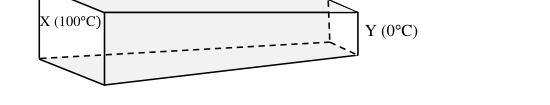
Quesito 21
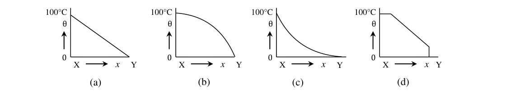
- (a) [see figure]
- (b) [see figure]
- (c) [see figure]
- (d) [see figure]
Topic: Thermodynamics Metodi: Physical Modeling Competenze: Diagrammatic Reasoning Objects: Rod Fonte: Testo (PDF) — p.6 Soluzione: Soluzioni (PDF)
La figura mostra una barra XY ritardata di sezione trasversale non uniforme. Un’estremità X della barra è mantenuta a e l’altra Y a . La variazione della temperatura lungo la sua lunghezza da X a Y in stato di stabilità è meglio rappresentata dalla curva.
Quesito 21
Quesito 21
- (a) [vedi figura]
- (b) [vedi figura]
- (c) [vedi figura]
- (d) [vedi figura]
Topic: Thermodynamics Metodi: Physical Modeling Competenze: Diagrammatic Reasoning Objects: Rod Fonte: Testo (PDF) — p.6 Soluzione: Soluzioni (PDF)
An ideal gas ( moles) is initially at pressure P and temperature T. It is cooled isochorically to a pressure . The gas is then expanded at a constant pressure so as to attain back its initial temperature T. Work done by the gas in the whole process is
- (a)
- (b)
- (c)
- (d) Zero
Topic: Thermodynamics Metodi: First Law of Thermodynamics, Ideal Gas Law Competenze: Mathematical Modeling Objects: Gas Fonte: Testo (PDF) — p.6 Soluzione: Soluzioni (PDF)
Un gas ideale (moles ) è inizialmente a pressione P e temperatura T. È raffreddato isochoricamente a una pressione . Il gas viene poi ampliato a pressione costante per raggiungere la sua temperatura iniziale T. Il lavoro svolto dal gas in tutto il processo è
- (a)
- (b)
- (c)
- (d) Zero
Topic: Thermodynamics Metodi: First Law of Thermodynamics, Ideal Gas Law Competenze: Mathematical Modeling Objects: Gas Fonte: Testo (PDF) — p.6 Soluzione: Soluzioni (PDF)
Assuming the Sun to be a spherical body (radius ) of surface temperature T, the total radiation power received by Earth (radius ) at a distance from Sun is
- (a)
- (b)
- (c)
- (d)
Topic: Thermodynamics, Astrophysics Metodi: Physical Modeling Competenze: Mathematical Modeling Objects: Star, Planet Fonte: Testo (PDF) — p.6 Soluzione: Soluzioni (PDF)
Supponendo che il Sole sia un corpo sferico (radio ) di temperatura superficiale T, la potenza radiativa totale ricevuta dalla Terra (radio ) a distanza dal Sole è
- (a)
- (b)
- (c)
- (d)
Topic: Thermodynamics, Astrophysics Metodi: Physical Modeling Competenze: Mathematical Modeling Objects: Star, Planet Fonte: Testo (PDF) — p.6 Soluzione: Soluzioni (PDF)
The figure shows five point-charges on a straight line. Separation between successive charges is 10 cm. For what values of and would the net force on each of the other three charges be zero?
- (a)
- (b)
- (c)
- (d)
Topic: Electrostatics Metodi: Coulomb’s Law, Symmetry Argument Competenze: Mathematical Modeling Objects: Point Charge Fonte: Testo (PDF) — p.6 Soluzione: Soluzioni (PDF)
La figura mostra cinque cariche puntate su una linea retta. La separazione tra cariche successive è di 10 cm. Per quali valori di e la forza netta su ciascuna delle altre tre cariche sarebbe zero?
- (a)
- (b)
- (c)
- (d)
Topic: Electrostatics Metodi: Coulomb’s Law, Symmetry Argument Competenze: Mathematical Modeling Objects: Point Charge Fonte: Testo (PDF) — p.6 Soluzione: Soluzioni (PDF)
Two equal blocks, each of mass M, hang on either side of a frictionless light pulley with a light string. A rider of mass m is placed on one of the blocks (as shown). When the system is released, the block with rider descends a distance H till the rider is caught by a ring that allows the block to pass through. The system moves a further distance D taking time t. In such a situation, the acceleration due to gravity is
Quesito 25
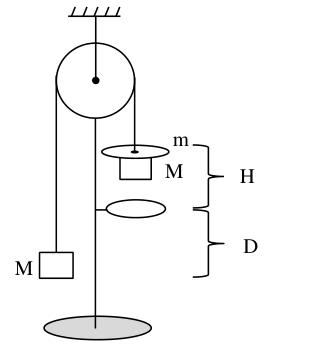
- (a)
- (b)
- (c)
- (d)
Topic: Newtonian Mechanics Metodi: Kinematic Equations, Free-Body Diagram Competenze: Mathematical Modeling Objects: Block, Pulley, String Fonte: Testo (PDF) — p.6 Soluzione: Soluzioni (PDF)
Due blocchi uguali, ognuno di massa M, appesi su entrambi i lati di una polea leggera senza attrito con una corda leggera. Un corridore di massa m è posto su uno dei blocchi (come mostrato). Quando il sistema viene rilasciato, il blocco con il pilota scende una distanza H fino a quando il pilota viene catturato da un anello che consente al blocco di passare attraverso. Il sistema si muove a distanza D prendendo il tempo t. In tale situazione, l’accelerazione dovuta alla gravità è
Quesito 25
- (a)
- (b)
- (c)
- (d)
Topic: Newtonian Mechanics Metodi: Kinematic Equations, Free-Body Diagram Competenze: Mathematical Modeling Objects: Block, Pulley, String Fonte: Testo (PDF) — p.6 Soluzione: Soluzioni (PDF)
A very small electric dipole of dipole moment lies along the x axis in a non-uniform electric field (where c is a constant). The force on the dipole is
- (a)
- (b)
- (c)
- (d) zero
Topic: Electrostatics Metodi: Calculus-Integration Competenze: Physical Reasoning Objects: — Fonte: Testo (PDF) — p.7 Soluzione: Soluzioni (PDF)
Un dipolo elettrico molto piccolo con momento di dipolo giace lungo l’asse x in un campo elettrico non uniforme (dove c è una costante). La forza sul dipolo è
- (a)
- (b)
- (c)
- (d) zero
Topic: Electrostatics Metodi: Calculus-Integration Competenze: Physical Reasoning Objects: — Fonte: Testo (PDF) — p.7 Soluzione: Soluzioni (PDF)
A conducting thick spherical shell of radii a and b () has been charged with uniform surface charge density on the inner and on the outer surfaces. Then
- (a) the net charge on the spherical shell is zero.
- (b) the radial electric field outside the shell is
- (c) a radial electric field exists outside the shell.
- (d) there is a net electric charge in the cavity (i.e. in region ) equal to
Topic: Electrostatics Metodi: Gauss’s Law Competenze: Physical Reasoning Objects: Conducting Sphere Fonte: Testo (PDF) — p.7 Soluzione: Soluzioni (PDF)
Un’oscurità con una spessa conca sferica di radii a e b () è stata caricata con una densità di carica superficiale uniforme sulla superficie interna e sulle superfici esterne. Allora…
- (a) la carica netta sul guscio sferico è zero.
- b) il campo elettrico radial al di fuori della conchiglia è
- c) al di fuori della conchiglia esiste un campo elettrico radial .
- c) c’è una carica elettrica netta nella cavità (cioè in regione ) =
Topic: Electrostatics Metodi: Gauss’s Law Competenze: Physical Reasoning Objects: Conducting Sphere Fonte: Testo (PDF) — p.7 Soluzione: Soluzioni (PDF)
A spherical conductor is charged up to a potential of 450 V. The potential outside, at a distance 15 cm from the surface, is 300 V. Then
- (a) the potential at 15 cm from the center is 900 V
- (b) the charge on the conductor is 1.5 nC
- (c) the electric field just outside the surface is 150 N/C
- (d) the total electrical energy of the conductor is
Topic: Electrostatics Metodi: Electric Potential Method Competenze: Mathematical Modeling Objects: Conducting Sphere Fonte: Testo (PDF) — p.7 Soluzione: Soluzioni (PDF)
Un conduttore sferico è carico fino a un potenziale di 450 V. Il potenziale esterno, a 15 cm dalla superficie, è di 300 V. Allora…
- a) il potenziale a 15 cm dal centro è di 900 V
- b) la carica del conduttore è di 1,5 nC
- c) il campo elettrico appena fuori dalla superficie è di 150 N/C
- d) l’energia elettrica totale del conduttore è
Topic: Electrostatics Metodi: Electric Potential Method Competenze: Mathematical Modeling Objects: Conducting Sphere Fonte: Testo (PDF) — p.7 Soluzione: Soluzioni (PDF)
Capacitors and are connected in a circuit as shown to a battery of 60 V. Now if key K is closed, the charge that will flow through K is
- (a) from b to a
- (b) from b to a
- (c) from a to b
- (d) from b to a
Topic: Circuits Metodi: Equivalent Circuit Reduction Competenze: Mathematical Modeling Objects: Capacitor, Battery, Switch Fonte: Testo (PDF) — p.7 Soluzione: Soluzioni (PDF)
I condensatori e sono collegati in circuito come mostrato a una batteria da 60 V. Ora, se la chiave K è chiusa, la carica che fluirà attraverso K è
- a) da b a a
- b) da b a
- (c) da a a b
- (d) da b a
Topic: Circuits Metodi: Equivalent Circuit Reduction Competenze: Mathematical Modeling Objects: Capacitor, Battery, Switch Fonte: Testo (PDF) — p.7 Soluzione: Soluzioni (PDF)
The electrical conductivity of a sample of semiconductor is found to increase when the electromagnetic radiation of wave length just shorter than 2480 nm is incident normally on its surface. The band gap of the semiconductor is
- (a) 1.96 eV
- (b) 1.12 eV
- (c) 0.50 eV
- (d) 0.29 eV
Topic: Modern-Quantum Physics Metodi: Photon Energy Relation Competenze: Unit Conversion Objects: Photon Fonte: Testo (PDF) — p.7 Soluzione: Soluzioni (PDF)
Si constata che la conducibilità elettrica di un campione di semiconduttore aumenta quando la radiazione elettromagnetica di lunghezza d’onda appena inferiore a 2480 nm si trova normalmente sulla sua superficie. La distanza tra le bande del semiconduttore è
- (a) 1.96 eV
- (b) 1.12 eV
- (c) 0.50 eV
- (d) 0.29 eV
Topic: Modern-Quantum Physics Metodi: Photon Energy Relation Competenze: Unit Conversion Objects: Photon Fonte: Testo (PDF) — p.7 Soluzione: Soluzioni (PDF)
A U-shaped conducting wire of mass , having length of its horizontal section as 20 cm, is free to move vertically up and down. The two ends of the wire are immersed in mercury for proper electrical contact. The wire is in a homogeneous field of magnetic induction as shown. The wire jumps up to a height when a charge q, in the form of a current pulse, is sent through the wire. Considering that the duration of the current pulse is very small compared to the time of flight, the charge q passed through the wire is estimated to be nearly
Quesito 31
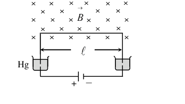
- (a)
- (b)
- (c) 2.84 C
- (d) 3.84 C
Topic: Magnetism, Newtonian Mechanics Metodi: Impulse-Momentum Theorem, Lorentz Force Analysis Competenze: Mathematical Modeling Objects: Wire Fonte: Testo (PDF) — p.7 Soluzione: Soluzioni (PDF)
Un filo conduttore a forma di U di massa , che ha una lunghezza della sezione orizzontale di 20 cm, può muoversi liberamente in verticale verso l’alto e verso il basso. Le due estremità del filo sono immerse nel mercurio per un corretto contatto elettrico. Il filo è in un campo omogeneo di induzione magnetica come mostrato. Il filo salta fino ad un’altezza quando una carica q, sotto forma di impulso corrente, viene inviata attraverso il filo. Considerando che la durata dell’impulso corrente è molto piccola rispetto al tempo di volo, la carica q passata attraverso il filo è stimata a circa
Quesito 31
- (a)
- (b)
- (c) 2.84 C
- (d) 3.84 C
Topic: Magnetism, Newtonian Mechanics Metodi: Impulse-Momentum Theorem, Lorentz Force Analysis Competenze: Mathematical Modeling Objects: Wire Fonte: Testo (PDF) — p.7 Soluzione: Soluzioni (PDF)
A target of Li is bombarded with a proton beam of current ampere for 1 hour to produce Be of activity disintegrations per second. Assuming that bombarding of 1000 protons produces one Be radioactive nucleus, the half-life of Be is estimated to be approximately
- (a) 6887 hour
- (b) 4332 hour
- (c) 2407 hour
- (d) 2195 hour
Topic: Nuclear & Particle Physics Metodi: Radioactive Decay Law Competenze: Mathematical Modeling Objects: Particle Beam, Nucleus Fonte: Testo (PDF) — p.8 Soluzione: Soluzioni (PDF)
Un bersaglio di Li viene bombardato con un fascio di protoni di corrente ampere per 1 ora per produrre disintegrazioni Be di attività al secondo. Supponendo che il bombardamento di 1000 protoni produca un nucleo radioattivo Be, la semivita di Be è stimata a circa
- a) 6887 ore
- b) 4332 ore
- c) 2407 ore
- 2195 ore
Topic: Nuclear & Particle Physics Metodi: Radioactive Decay Law Competenze: Mathematical Modeling Objects: Particle Beam, Nucleus Fonte: Testo (PDF) — p.8 Soluzione: Soluzioni (PDF)
A long straight wire carrying a current and a rectangular metallic loop of dimensions lie in the same plane as shown in the figure. The parameters are , and . The mutual inductance of the system is nearly
Quesito 33
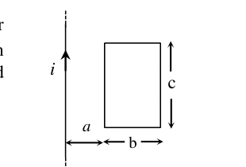
- (a) 69 nH
- (b) 71 nH
- (c) 139 nH
- (d) 281 nH
Topic: Electromagnetic Induction Metodi: Ampère’s Law, Calculus-Integration Competenze: Mathematical Modeling Objects: Wire, Coil Fonte: Testo (PDF) — p.8 Soluzione: Soluzioni (PDF)
Un lungo filo retto con corrente e un ciclo metallico rettangolare di dimensioni si trovano nello stesso piano come mostrato nella figura. I parametri sono , e . L’induttanza reciproca del sistema è quasi
Quesito 33
- (a) 69 nH
- (b) 71 nH
- (c) 139 nH
- (d) 281 nH
Topic: Electromagnetic Induction Metodi: Ampère’s Law, Calculus-Integration Competenze: Mathematical Modeling Objects: Wire, Coil Fonte: Testo (PDF) — p.8 Soluzione: Soluzioni (PDF)
Impedance of a given series LCR circuit, fed with alternating current, is the same for two frequencies and . The resonance frequency of the circuit is
- (a)
- (b)
- (c)
- (d)
Topic: Circuits Metodi: Physical Modeling Competenze: Mathematical Modeling Objects: Resistor, Inductor, Capacitor Fonte: Testo (PDF) — p.8 Soluzione: Soluzioni (PDF)
L’impedenza di un circuito LCR di serie data, alimentato da corrente alternata, è la stessa per due frequenze e . La frequenza di risonanza del circuito è
- (a)
- (b)
- (c)
- (d)
Topic: Circuits Metodi: Physical Modeling Competenze: Mathematical Modeling Objects: Resistor, Inductor, Capacitor Fonte: Testo (PDF) — p.8 Soluzione: Soluzioni (PDF)
A lawn roller is a solid cylinder of mass M and radius R. As shown in the figure, it is pulled at its center by a horizontal force F and rolls without slipping on a horizontal surface. Then the
Quesito 35
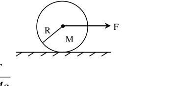
- (a) acceleration of the cylinder is
- (b) force of friction acting on the cylinder is
- (c) coefficient of friction needed to prevent slipping is at least
- (d) minimum coefficient of friction to prevent slipping is
Topic: Rotational Dynamics Metodi: Torque & Angular Momentum Analysis, Free-Body Diagram Competenze: Physical Reasoning Objects: Cylinder Fonte: Testo (PDF) — p.8 Soluzione: Soluzioni (PDF)
Un laminato a prato è un cilindro solido di massa M e raggio R. Come mostra la figura, viene tirata al centro da una forza orizzontale F e ruota senza scivolare su una superficie orizzontale. Poi il
Quesito 35
- (a) l’accelerazione del cilindro è
- b) la forza di attrito che agisce sul cilindro è
- c) il coefficiente di attrito necessario per evitare gli scivoli è almeno
- d) il coefficiente minimo di attrito per evitare scivolamento è
Topic: Rotational Dynamics Metodi: Torque & Angular Momentum Analysis, Free-Body Diagram Competenze: Physical Reasoning Objects: Cylinder Fonte: Testo (PDF) — p.8 Soluzione: Soluzioni (PDF)
A hydrogen atom ( kg), initially at rest, emits a photon and goes from the excited state to the ground state. The recoil speed of the atom is nearly
- (a)
- (b)
- (c)
- (d)
Topic: Modern-Quantum Physics, Conservation of Momentum Metodi: Bohr Model & Quantization, Conservation of Momentum Competenze: Mathematical Modeling Objects: Atom, Photon Fonte: Testo (PDF) — p.8 Soluzione: Soluzioni (PDF)
Un atomo di idrogeno ( kg), inizialmente a riposo, emette un fotone e passa dallo stato eccitato allo stato di base. La velocità di ritiro dell’ atomo è quasi
- (a)
- (b)
- (c)
- (d)
Topic: Modern-Quantum Physics, Conservation of Momentum Metodi: Bohr Model & Quantization, Conservation of Momentum Competenze: Mathematical Modeling Objects: Atom, Photon Fonte: Testo (PDF) — p.8 Soluzione: Soluzioni (PDF)
Two nuclides A and B are isotopes. The nuclides B and C are isobars. All the three nuclides A, B and C are radioactive. You may then conclude that
- (a) the nuclides A, B and C must belong to the same element
- (b) the nuclides A, B and C may belong to the same element
- (c) it is possible that A may change to B through a radioactive decay process
- (d) it is possible that B may change to C through a radioactive decay process
Topic: Nuclear & Particle Physics Metodi: Physical Modeling Competenze: Physical Reasoning Objects: Nucleus Fonte: Testo (PDF) — p.8 Soluzione: Soluzioni (PDF)
Due nuclidi A e B sono isotopi. I nuclidi B e C sono isobari. Tutti e tre i nuclidi A, B e C sono radioattivi. Potreste quindi concludere che
- a) i nuclidi A, B e C devono appartenere allo stesso elemento
- b) i nuclidi A, B e C possono appartenere allo stesso elemento
- c) è possibile che A possa cambiare in B attraverso un processo di decomposizione radioattiva
- d) è possibile che B possa cambiare in C attraverso un processo di decomposizione radioattiva
Topic: Nuclear & Particle Physics Metodi: Physical Modeling Competenze: Physical Reasoning Objects: Nucleus Fonte: Testo (PDF) — p.8 Soluzione: Soluzioni (PDF)
Numerical aperture of an optical fibre is a measure of
- (a) the attenuation of light through it
- (b) its resolving power
- (c) the pulse dispersion through it
- (d) its light gathering power
Topic: Geometric Optics Metodi: Physical Modeling Competenze: Physical Reasoning Objects: — Fonte: Testo (PDF) — p.8 Soluzione: Soluzioni (PDF)
L’apertura numerica di una fibra ottica è una misura di
- a) l’attenuzione della luce attraverso di essa
- b) il suo potere di risoluzione
- (c) la dispersione del polso attraverso di esso
- d) la sua potenza di raccolta della luce
Topic: Geometric Optics Metodi: Physical Modeling Competenze: Physical Reasoning Objects: — Fonte: Testo (PDF) — p.8 Soluzione: Soluzioni (PDF)
Heavy stable nuclei have more neutrons than protons. This is because of the fact that
- (a) neutrons are heavier than protons
- (b) the electrostatic forces between protons are repulsive
- (c) neutrons decay into protons through beta decay
- (d) the nuclear forces between neutrons are weaker than those between protons
Topic: Nuclear & Particle Physics Metodi: Physical Modeling Competenze: Physical Reasoning Objects: Nucleus Fonte: Testo (PDF) — p.9 Soluzione: Soluzioni (PDF)
I nuclei stabili pesanti hanno più neutroni dei protoni. Questo è dovuto al fatto che
- (a) i neutroni sono più pesanti dei protoni
- b) le forze elettrostatiche tra i protoni sono repulsive
- (c) i neutroni si decompongono in protoni attraverso il decomposizione beta
- d) le forze nucleari tra i neutroni sono più deboli di quelle tra i protoni
Topic: Nuclear & Particle Physics Metodi: Physical Modeling Competenze: Physical Reasoning Objects: Nucleus Fonte: Testo (PDF) — p.9 Soluzione: Soluzioni (PDF)
An equi-concave lens of radii of curvature of the two surfaces numerically equal to 7 cm and refractive index has a small silver dot on the rear surface. As a result of this, a ray of light incident parallel to the principal axis gets reflected from its rear surface and then reflected also from the inner front surface. The ray after the second reflection emerges out of the thin lens and appears to focus at a point P on the principal axis. The point P lies
- (a) 1 cm before the lens
- (b) 2 cm before the lens
- (c) 1 cm beyond the lens
- (d) at none of these
Topic: Geometric Optics Metodi: Thin Lens & Mirror Equation, Ray Tracing Competenze: Mathematical Modeling Objects: Lens, Mirror Fonte: Testo (PDF) — p.9 Soluzione: Soluzioni (PDF)
Un obiettivo equi-concavo di raggi di curvatura delle due superfici numericamente pari a 7 cm e indice di rifrazione ha un piccolo punto argento sulla superficie posteriore. Di conseguenza, un raggio di luce incidente parallelo all’asse principale si riflette dalla sua superficie posteriore e poi si riflette anche dalla superficie anteriore interna. Il raggio dopo la seconda riflessione emerge dalla lente sottile e sembra focalizzarsi su un punto P sull’asse principale. Il punto P si trova
- a) 1 cm prima della lente
- b) 2 cm prima della lente
- c) 1 cm oltre la lente
- (d) in nessuna di queste
Topic: Geometric Optics Metodi: Thin Lens & Mirror Equation, Ray Tracing Competenze: Mathematical Modeling Objects: Lens, Mirror Fonte: Testo (PDF) — p.9 Soluzione: Soluzioni (PDF)
Light emerges out uniformly from a point source placed at the focus of a concave mirror to give out a spherical wave front. As a result of reflection of the paraxial rays from the concave mirror, according to Huygen’s theory the reflected light is in the form of a
- (a) spherical wave front with centre at the focus, and radius equal to the radius of curvature of the mirror
- (b) spherical wave front with centre at the focus, and radius equal to the focal length of the mirror
- (c) cylindrical wave front with its axis coinciding with the principal axis of the mirror.
- (d) plane wave front perpendicular to the reflected beam
Topic: Wave Optics, Geometric Optics Metodi: Physical Modeling Competenze: Physical Reasoning Objects: Mirror Fonte: Testo (PDF) — p.9 Soluzione: Soluzioni (PDF)
La luce emerge uniformemente da una fonte puntata posta al centro di uno specchio concavo per dare un fronte d’onda sferica. Come risultato del riflesso dei raggi paraxiali dallo specchio concavo, secondo la teoria di Huygen la luce riflessa è sotto forma di un
- a) fronte d’onda sferica con centro focalizzato e raggio pari al raggio di curvatura dello specchio
- b) fronte d’onda sferica con centro focalizzato e raggio uguale alla lunghezza focale dello specchio
- (c) fronte d’onda cilindrica con l’asse che coincide con l’asse principale dello specchio.
- d) fronte di onde piane perpendicolare al fascio riflesso
Topic: Wave Optics, Geometric Optics Metodi: Physical Modeling Competenze: Physical Reasoning Objects: Mirror Fonte: Testo (PDF) — p.9 Soluzione: Soluzioni (PDF)
An equi-convex lens of focal length '' is cut along a diameter, in two halves (pieces). The two identical pieces of the lens are now arranged as shown in the figure on a common axis at a separation between the two. The image of an object AB placed at cannot be formed at the distance from the object along the axis, for the value of as
Quesito 42
- (a)
- (b)
- (c)
- (d)
Topic: Geometric Optics Metodi: Thin Lens & Mirror Equation, Ray Tracing Competenze: Mathematical Modeling Objects: Lens Fonte: Testo (PDF) — p.9 Soluzione: Soluzioni (PDF)
Un obiettivo equi-convex di lunghezza focale è tagliato lungo un diametro, in due metà (piezzi). I due pezzi identici della lente sono ora disposti come mostrato nella figura su un asse comune a una separazione tra i due. L’immagine di un oggetto AB posizionato a non può essere formata alla distanza dall’oggetto lungo l’asse, per il valore di come
Quesito 42
- (a)
- (b)
- (c)
- (d)
Topic: Geometric Optics Metodi: Thin Lens & Mirror Equation, Ray Tracing Competenze: Mathematical Modeling Objects: Lens Fonte: Testo (PDF) — p.9 Soluzione: Soluzioni (PDF)
During the processes of annihilation of a stationary electron of mass with a stationary positron of equal mass, a radiation is emitted. The wavelength of the resulting radiation is
- (a)
- (b)
- (c)
- (d)
Topic: Nuclear & Particle Physics, Modern-Quantum Physics Metodi: Mass-Energy Equivalence, Photon Energy Relation Competenze: Mathematical Modeling Objects: Electron, Photon Fonte: Testo (PDF) — p.9 Soluzione: Soluzioni (PDF)
Durante i processi di annihilazione di un elettrone stazionario di massa con un positrone stazionario di massa uguale, viene emessa una radiazione. La lunghezza d’onda della radiazione risultante è
- (a)
- (b)
- (c)
- (d)
Topic: Nuclear & Particle Physics, Modern-Quantum Physics Metodi: Mass-Energy Equivalence, Photon Energy Relation Competenze: Mathematical Modeling Objects: Electron, Photon Fonte: Testo (PDF) — p.9 Soluzione: Soluzioni (PDF)
The convex surface of a concavo-convex lens of refractive index 1.5 and radii of curvature cm and cm has been silvered so as to make it reflecting. The distance of a luminous object from the reflecting system when placed in front of it on its principal axis, so that the image coincides with the object is
- (a) 40 cm
- (b) 32 cm
- (c) 16 cm
- (d) 8 cm
Topic: Geometric Optics Metodi: Thin Lens & Mirror Equation Competenze: Mathematical Modeling Objects: Lens, Mirror Fonte: Testo (PDF) — p.9 Soluzione: Soluzioni (PDF)
La superficie convexa di una lente concavo-convexa con un indice di rifrazione di 1,5 e dei raggi di curvatura cm e cm è stata arginata in modo da renderla riflettente. La distanza di un oggetto luminoso dal sistema riflettente quando viene posto di fronte a esso sull’asse principale, in modo che l’immagine coincida con l’oggetto è
- (a) 40 cm
- (b) 32 cm
- (c) 16 cm
- (d) 8 cm
Topic: Geometric Optics Metodi: Thin Lens & Mirror Equation Competenze: Mathematical Modeling Objects: Lens, Mirror Fonte: Testo (PDF) — p.9 Soluzione: Soluzioni (PDF)
A direct vision spectroscope has been designed to obtain dispersion without deviation by arranging alternate inverted thin prisms of crown glass (refractive index ) and flint glass () with refracting angle . The refracting angle of the crown glass prism is
- (a)
- (b)
- (c)
- (d)
Topic: Geometric Optics Metodi: Snell’s Law, Small-Angle Approximation Competenze: Mathematical Modeling Objects: Prism Fonte: Testo (PDF) — p.9 Soluzione: Soluzioni (PDF)
È stato progettato uno spettroscopio di visione diretta per ottenere dispersione senza deviazioni mediante la disposizione di prismi sottili invertiti alternativi di vetro di corona (indice di rifrazione ) e vetro di fiore () con angolo di rifrazione . L’angolo di rifrazione del prisma in vetro di corona è
- (a)
- (b)
- (c)
- (d)
Topic: Geometric Optics Metodi: Snell’s Law, Small-Angle Approximation Competenze: Mathematical Modeling Objects: Prism Fonte: Testo (PDF) — p.9 Soluzione: Soluzioni (PDF)
X-rays are produced when electron beam accelerated by a high voltage V is made to hit the metallic target such as Molybdenum in a X-ray tube. is the shortest possible wavelength of continuous X-rays and is the wavelength of characteristic X-rays. Then
- (a) decreases with increase in V
- (b) decreases with increase in V
- (c) is independent of V
- (d) decreases with increase in V
Topic: Modern-Quantum Physics Metodi: Photon Energy Relation Competenze: Physical Reasoning Objects: Particle Beam Fonte: Testo (PDF) — p.10 Soluzione: Soluzioni (PDF)
I raggi X vengono prodotti quando un fascio di elettroni accelerato da una alta tensione V viene fatto per colpire l’obiettivo metallico come il molibdeno in un tubo a raggi X. è la lunghezza d’onda più breve possibile dei raggi X continui e è la lunghezza d’onda dei raggi X caratteristici. Allora…
- a) diminuisce con l’aumento di V
- b) diminuisce con l’aumento di V
- (c) è indipendente da V
- (d) diminuisce con l’aumento di V
Topic: Modern-Quantum Physics Metodi: Photon Energy Relation Competenze: Physical Reasoning Objects: Particle Beam Fonte: Testo (PDF) — p.10 Soluzione: Soluzioni (PDF)
In an experiment determining the focal length of a concave mirror by u-v method, the readings of the positions (in cm) of the object and the image were (12, 60), (18, 54), (30, 50), (48, 34), (42, 42) and (78, 98). The object is fixed at the 0 cm mark and the mirror is fixed at the 90 cm mark on the bench. The least count for the position of the image is 0.2 cm. The reading (observation) which deviates from a smooth measurement and has been incorrectly recorded, for a measurement, is
- (a) (18, 54)
- (b) (30, 50)
- (c) (48, 34)
- (d) (78, 98)
Topic: Geometric Optics Metodi: Experimental Data Analysis, Thin Lens & Mirror Equation Competenze: Experimental Data Analysis Objects: Mirror Fonte: Testo (PDF) — p.10 Soluzione: Soluzioni (PDF)
In un esperimento che determinava la distanza focale di uno specchio concavo con il metodo u-v, le letture delle posizioni (in cm) dell’oggetto e dell’immagine erano (12, 60), (18, 54), (30, 50), (48, 34), (42, 42) e (78, 98). L’oggetto è fissato al marchio di 0 cm e lo specchio al marchio di 90 cm sulla panchina. Il minimo di contato per la posizione dell’immagine è di 0,2 cm. La lettura (osservazione) che si allontana da una misurazione fluida e che è stata erroneamente registrata, per una misurazione, è
- (a) (18, 54)
- (b) (30, 50)
- (c) (48, 34)
- (d) (78, 98)
Topic: Geometric Optics Metodi: Experimental Data Analysis, Thin Lens & Mirror Equation Competenze: Experimental Data Analysis Objects: Mirror Fonte: Testo (PDF) — p.10 Soluzione: Soluzioni (PDF)
Electromagnetic radiations of wavelength and of area of cross-section A are completely reflected normally by a metallic surface. If the radiations are completely reflected, the pressure exerted on the metallic surface is estimated to be
- (a)
- (b)
- (c)
- (d)
Topic: Modern-Quantum Physics Metodi: Photon Energy Relation Competenze: Mathematical Modeling Objects: Photon Fonte: Testo (PDF) — p.10 Soluzione: Soluzioni (PDF)
Le radiazioni elettromagnetiche di lunghezza d’onda e di superficie di sezione A sono normalmente completamente riflesse da una superficie metallica. Se le radiazioni sono completamente riflesse, la pressione esercitata sulla superficie metallica è stimata a
- (a)
- (b)
- (c)
- (d)
Topic: Modern-Quantum Physics Metodi: Photon Energy Relation Competenze: Mathematical Modeling Objects: Photon Fonte: Testo (PDF) — p.10 Soluzione: Soluzioni (PDF)
Part A-2 (any number of options — 4, 3, 2 or 1 — may be correct; marks only if all correct options are bubbled and no incorrect).
The force F(x) acting on a body of mass m changes with position (in meter) as shown. It is given that the potential energy U(x) = 0 at . Choose correct option(s).
Quesito 49
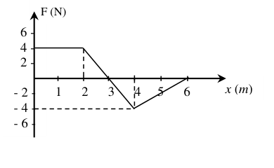
- (a) at , and
- (b) for
- (c) for
- (d) At
Topic: Conservation of Energy, Newtonian Mechanics Metodi: Calculus-Integration, Conservation of Energy Competenze: Diagrammatic Reasoning Objects: — Fonte: Testo (PDF) — p.11 Soluzione: Soluzioni (PDF)
Parte A-2 (qualsiasi numero di opzioni 4, 3, 2 o 1 può essere corretto; segna solo se tutte le opzioni corrette sono bollicate e non sono errate).
La forza F ((x) che agisce su un corpo di massa m cambia con la posizione (in metro) come mostrato. Si dà che l’energia potenziale U(x) = 0 a . Scegliere l’opzione corretta (s).
Quesito 49
- a) a , e
- b) per
- (c) per
- (d) At
Topic: Conservation of Energy, Newtonian Mechanics Metodi: Calculus-Integration, Conservation of Energy Competenze: Diagrammatic Reasoning Objects: — Fonte: Testo (PDF) — p.11 Soluzione: Soluzioni (PDF)
A deuteron of mass M moving at speed collides elastically with an -particle of mass 2M, initially at rest. The deuteron is scattered through 90° from initial direction of its motion with speed while the -particle is scattered with speed at an angle from the initial direction of motion of deuteron. Then
- (a)
- (b)
- (c)
- (d) a fraction of energy of deuteron is transferred to particle
Topic: Conservation of Momentum, Conservation of Energy Metodi: Conservation of Momentum, Conservation of Energy Competenze: Mathematical Modeling Objects: Nucleus Fonte: Testo (PDF) — p.11 Soluzione: Soluzioni (PDF)
Un deuteron di massa M in movimento a velocità colpisce elasticamente con una particella di massa 2M, inizialmente in riposo. Il deuteron è disperso attraverso 90° dalla direzione iniziale del suo movimento con velocità mentre la -particella è dispersa con velocità ad un angolo dalla direzione iniziale del movimento del deuteron. Allora…
- (a)
- (b)
- (c)
- (d) una frazione di energia di deuteron viene trasferita alla particella
Topic: Conservation of Momentum, Conservation of Energy Metodi: Conservation of Momentum, Conservation of Energy Competenze: Mathematical Modeling Objects: Nucleus Fonte: Testo (PDF) — p.11 Soluzione: Soluzioni (PDF)
Two plane progressive waves travelling on a string as superimpose to produce a standing wave. The variables and are in meter and t is in second. Then
- (a) the equation of resultant standing wave is
- (b) the equation of resultant standing wave is
- (c) the antinode closest to is at
- (d) the amplitude of oscillation of particle at is
Topic: Oscillations & Waves Metodi: Superposition Principle, Wave Equation Competenze: Mathematical Modeling Objects: String Fonte: Testo (PDF) — p.11 Soluzione: Soluzioni (PDF)
Due onde progressive a piano che viaggiano su una corda come superponendo per produrre un’onda in piedi. Le variabili e sono in metro e t è in secondo. Allora…
- a) l’equazione dell’onda in piedi risultante è
- b) l’equazione dell’onda in piedi risultante è
- (c) l’antinodo più vicino a è a
- d) l’ampiezza di oscillazione della particella a è
Topic: Oscillations & Waves Metodi: Superposition Principle, Wave Equation Competenze: Mathematical Modeling Objects: String Fonte: Testo (PDF) — p.11 Soluzione: Soluzioni (PDF)
Two moles of nitrogen in a container, of negligible thermal capacity, are initially at 17 °C. The gas is compressed adiabatically from an initial volume of 120 liter to 80 liter. The correct option(s) is/are
- (a) Initial pressure of the gas is nearly
- (b) Final temperature of the gas is nearly 68 °C
- (c) Work done by the gas is
- (d) The internal energy of the gas increases by
Topic: Thermodynamics Metodi: First Law of Thermodynamics, Ideal Gas Law Competenze: Mathematical Modeling Objects: Gas, Container Fonte: Testo (PDF) — p.12 Soluzione: Soluzioni (PDF)
Due mole di azoto in un contenitore, di capacità termica trascurabile, sono inizialmente 17 °C. Il gas viene compresso adiabaticamente da un volume iniziale di 120 litri a 80 litri. L’opzione corretta è
- a) La pressione iniziale del gas è di quasi
- b) La temperatura finale del gas è di quasi 68 ° C
- c) Il lavoro svolto dal gas è
- d) L’energia interna del gas aumenta di
Topic: Thermodynamics Metodi: First Law of Thermodynamics, Ideal Gas Law Competenze: Mathematical Modeling Objects: Gas, Container Fonte: Testo (PDF) — p.12 Soluzione: Soluzioni (PDF)
A small dipole is placed at the origin with its dipole moment oriented along x axis. E and V, are respectively, the Electric field and potential at point A(x, y). The observations at the Point A(x, y) which is at a large distance r from the origin, show that
- (a)
- (b)
- (c)
- (d)
Topic: Electrostatics Metodi: Electric Potential Method, Approximation & Series Expansion Competenze: Mathematical Modeling Objects: — Fonte: Testo (PDF) — p.12 Soluzione: Soluzioni (PDF)
All’origine si colloca un piccolo dipolo con il suo momento di dipolo orientato lungo l’asse x. E e V, rispettivamente, sono il campo elettrico e il potenziale al punto A(x, y). Le osservazioni effettuate al punto A (x, y), che si trova a grande distanza r dall’origine, dimostrano che
- (a)
- (b)
- (c)
- (d)
Topic: Electrostatics Metodi: Electric Potential Method, Approximation & Series Expansion Competenze: Mathematical Modeling Objects: — Fonte: Testo (PDF) — p.12 Soluzione: Soluzioni (PDF)
Two equal positive charges +Q each lie on y axis at and . The electric field strength E at a point satisfies:
- (a)
- (b) for large values of (), the electric field
- (c) for , E is maximum at
- (d) for , E is maximum at and is equal to
Topic: Electrostatics Metodi: Coulomb’s Law, Superposition Principle Competenze: Mathematical Modeling Objects: Point Charge Fonte: Testo (PDF) — p.12 Soluzione: Soluzioni (PDF)
Due cariche positive uguali +Q si trovano ciascuna sull’asse y a e . La resistenza del campo elettrico E in un punto soddisfa:
- (a)
- b) per i grandi valori di (), il campo elettrico
- per , E è massimo a
- (d) per , E è massimo a ed è uguale a
Topic: Electrostatics Metodi: Coulomb’s Law, Superposition Principle Competenze: Mathematical Modeling Objects: Point Charge Fonte: Testo (PDF) — p.12 Soluzione: Soluzioni (PDF)
A metal rod of mass m and length slides on frictionless parallel metal rails of negligible resistance. A resistance R is connected between the rails at their ends as shown in the figure. A uniform magnetic field B is directed into the plane of paper perpendicular to the plane of rails throughout the space. The rod is given an initial velocity (towards right). No other force acts on the rod. Then
Quesito 55
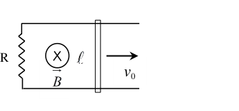
- (a)
- (b) the rod stops after traveling a distance
- (c) the total energy dissipated in resistance is i.e. half of the initial kinetic energy
- (d) the total charge that flows in the circuit is
Topic: Electromagnetic Induction Metodi: Faraday’s Law of Induction, Differential Equations Competenze: Mathematical Modeling Objects: Rod, Resistor, Wire Fonte: Testo (PDF) — p.12 Soluzione: Soluzioni (PDF)
Una barra di metallo di massa m e lunghezza scivola su rotaie metalliche parallele senza attrito di resistenza trascurabile. Una resistenza R è collegata tra le rotaie alle loro estremità come mostrato nella figura. Un campo magnetico uniforme B è diretto verso il piano di carta perpendicolare al piano dei binari in tutto lo spazio. La barra è data una velocità iniziale (a destra). Nessuna altra forza agisce sulla canna. Allora…
Quesito 55
- (a)
- b) la canna si ferma dopo aver percorso una distanza
- (c) l’energia totale dissipata in resistenza è , cioè metà dell’energia cinetica iniziale
- (d) la carica totale che scorre nel circuito è
Topic: Electromagnetic Induction Metodi: Faraday’s Law of Induction, Differential Equations Competenze: Mathematical Modeling Objects: Rod, Resistor, Wire Fonte: Testo (PDF) — p.12 Soluzione: Soluzioni (PDF)
The magnetic field represents a plane electromagnetic wave travelling in space with in meter and t in second. The correct statement(s) are
- (a) The wave length of the wave is 4.0 mm and its frequency is 75 GHz
- (b) The energy density associated with the wave is nearly
- (c) The electric field vector is
- (d) The electric field vector is
Topic: Electromagnetism Metodi: Wave Equation Competenze: Mathematical Modeling Objects: — Fonte: Testo (PDF) — p.12 Soluzione: Soluzioni (PDF)
Il campo magnetico rappresenta un’onda elettromagnetica a piano che viaggia nello spazio con in metro e t in secondo. La corretta dichiarazione (s) è
- a) La lunghezza d’onda dell’onda è di 4,0 mm e la frequenza è di 75 GHz
- (b) La densità energetica associata all’onda è quasi
- (c) Il vettore del campo elettrico è
- (d) Il vettore del campo elettrico è
Topic: Electromagnetism Metodi: Wave Equation Competenze: Mathematical Modeling Objects: — Fonte: Testo (PDF) — p.12 Soluzione: Soluzioni (PDF)
In the circuit shown, the current in the 8 resistance across G and H is ampere. The ammeter is ideal. The internal resistance of the cell is 0.8 . Choose correct option(s).
Quesito 57
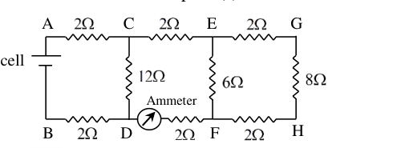
- (a) Reading of the ammeter is 1.5 ampere
- (b) Potential difference across A and H is 13 V
- (c) Potential difference across C and F is 9 V
- (d) The emf of the cell is 24 V
Topic: Circuits Metodi: Kirchhoff’s Laws, Equivalent Circuit Reduction Competenze: Mathematical Modeling Objects: Resistor, Battery Fonte: Testo (PDF) — p.13 Soluzione: Soluzioni (PDF)
Nel circuito mostrato, la corrente nella resistenza 8 tra G e H è ampere. L’ampilometro e’ ideale. La resistenza interna della cellula è di 0,8 . Scegliere l’opzione corretta (s).
Quesito 57
- a) L’ampiezza è di 1,5 ampere
- (b) La differenza di potenziale tra A e H è di 13 V
- c) La differenza di potenziale tra C e F è di 9 V
- (d) L’emf della cella è di 24 V
Topic: Circuits Metodi: Kirchhoff’s Laws, Equivalent Circuit Reduction Competenze: Mathematical Modeling Objects: Resistor, Battery Fonte: Testo (PDF) — p.13 Soluzione: Soluzioni (PDF)
In an experiment with Lummer Gehrecke plate, the two coherent beams of light, caused by multiple reflections inside the transparent plate of refractive index , reach the points P and Q on the screen. The net path difference between the two beams reaching either at P or Q is . Which of the wavelengths in the visible range to are most likely to produce a constructive interference (a maximum) at the point P as well as at Q on the screen?
Quesito 58
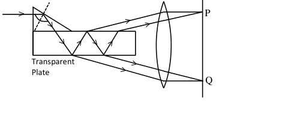
- (a) 416.67 nm
- (b) 555.56 nm
- (c) 625.00 nm
- (d) 666.70 nm
Topic: Wave Optics Metodi: Interference & Diffraction Analysis Competenze: Mathematical Modeling Objects: Screen Fonte: Testo (PDF) — p.13 Soluzione: Soluzioni (PDF)
In un esperimento con la piastra Lummer Gehrecke, i due fasci di luce coerenti, causati da molteplici riflessi all’interno della piastra trasparente di indice di rifrazione , raggiungono i punti P e Q sullo schermo. La differenza netta tra i due fasci raggiungendo P o Q è . Quali delle lunghezze d’onda nell’intervallo visibile a hanno maggiori probabilità di produrre un’interferenza costruttiva (un massimo) al punto P e a Q sullo schermo?
Quesito 58
- (a) 416.67 nm
- (b) 555.56 nm
- (c) 625.00 nm
- (d) 666.70 nm
Topic: Wave Optics Metodi: Interference & Diffraction Analysis Competenze: Mathematical Modeling Objects: Screen Fonte: Testo (PDF) — p.13 Soluzione: Soluzioni (PDF)
Two identical transparent solid cylinders, each of radius 10 cm and refractive index , lie horizontally parallel to each other on a horizontal plane mirror with a separation between their horizontal axes. A ray of light is incident horizontally on the cylinder A at a height above the plane mirror so as to emerge from this cylinder at a height above the plane mirror. The ray emerging out from the first cylinder A is reflected from the horizontal plane mirror to enter the second parallel cylinder B at a height and then this ray emerges out of the second cylinder, parallel and in-line with the original incident ray. The correct statement(s) is/are:
- (a) the height h above the plane mirror is
- (b) the ray enters the second cylinder B at a height
- (c) the separation between the axes of the two cylinders A and B is
- (d) the angle of incidence on the plane mirror midway between the two cylinders is
Topic: Geometric Optics Metodi: Snell’s Law, Ray Tracing Competenze: Mathematical Modeling Objects: Cylinder, Mirror Fonte: Testo (PDF) — p.13 Soluzione: Soluzioni (PDF)
Due cilindri solidi trasparenti identici, ciascuno di raggio di 10 cm e indice di rifrazione , si trovano orizzontalmente paralleli l’uno all’altro su uno specchio di piano orizzontale con una separazione tra i loro assi orizzontali. Un raggio di luce incide orizzontalmente sul cilindro A ad un’altezza sopra lo specchio di piano in modo da emergere da questo cilindro ad un’altezza sopra lo specchio di piano. Il raggio che esce dal primo cilindro A viene riflesso dallo specchio di piano orizzontale per entrare nel secondo cilindro parallelo B ad un’altezza e poi questo raggio esce dal secondo cilindro, parallelo e in linea con il raggio incidente originale. La corretta dichiarazione (s) è/sono:
- (a) l’altezza h sopra lo specchio di piano è
- b) il raggio entra nel secondo cilindro B ad un’altezza
- c) la separazione tra gli assi dei due cilindri A e B è
- d) l’angolo di incidenza sul specchio a piatto a metà strada tra i due cilindri è
Topic: Geometric Optics Metodi: Snell’s Law, Ray Tracing Competenze: Mathematical Modeling Objects: Cylinder, Mirror Fonte: Testo (PDF) — p.13 Soluzione: Soluzioni (PDF)
In the working of a junction
- (a) diffusion current dominates when the junction is forward biased
- (b) drift current dominates when the junction is reverse biased
- (c) depletion region width decreases with increase in forward bias voltage.
- (d) the electric field in the depletion region depends on the number of ionized dopants rather than the dopant density.
Topic: Modern-Quantum Physics Metodi: Physical Modeling Competenze: Physical Reasoning Objects: — Fonte: Testo (PDF) — p.13 Soluzione: Soluzioni (PDF)
Al lavoro di un’incontro
- (a) la corrente di diffusione domina quando la giunzione è orientata in avanti
- b) la corrente di deriva domina quando la giunzione è inversa
- (c) larghezza della regione di esaurimento diminuisce con l’aumento della tensione di bias in avanti.
- d) il campo elettrico nella regione di esaurimento dipende dal numero di dopanti ionizzati piuttosto che dalla densità del dopante.
Topic: Modern-Quantum Physics Metodi: Physical Modeling Competenze: Physical Reasoning Objects: — Fonte: Testo (PDF) — p.13 Soluzione: Soluzioni (PDF)